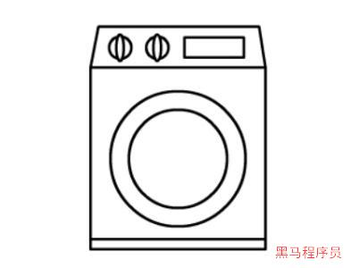
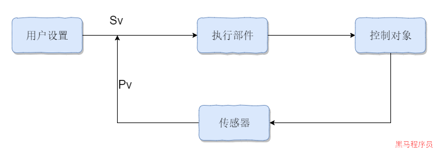
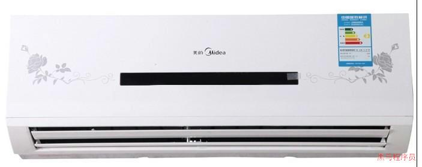
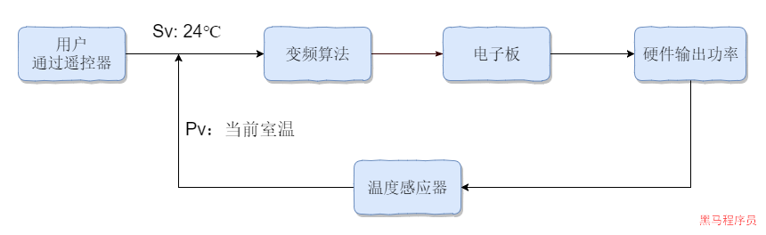
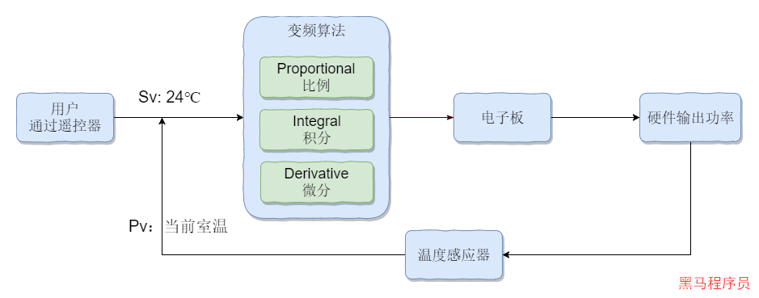
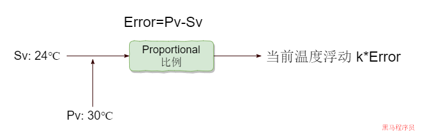
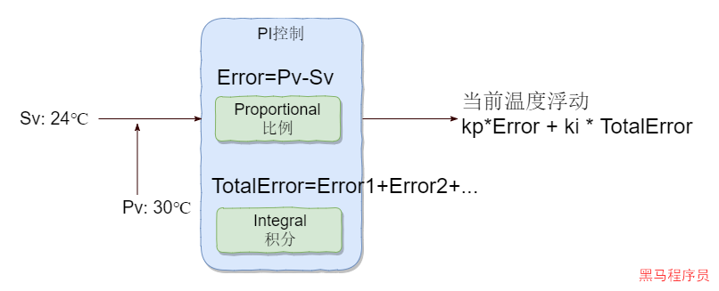
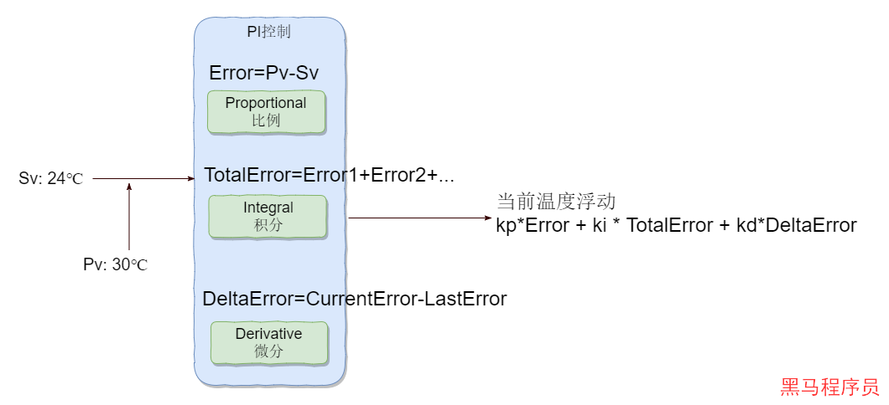
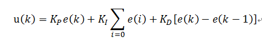
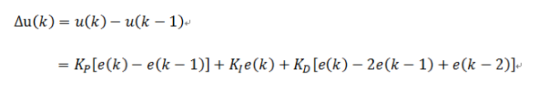

<!DOCTYPE lake>
<h1 data-lake-id="DsSlI" id="DsSlI"><span data-lake-id="ucee4d9a6" id="ucee4d9a6" style="color: rgba(0, 0, 0, 0.87)">什么是控制系统</span></h1><p data-lake-id="u1076d4a5" id="u1076d4a5"><span class="lake-fontsize-14" data-lake-id="uc7b83ed1" id="uc7b83ed1" style="color: rgba(0, 0, 0, 0.87)">人其实也是一个复杂的控制系统，体温，血压，ph值等...</span></p><p data-lake-id="uf4ad39f5" id="uf4ad39f5"><span class="lake-fontsize-14" data-lake-id="u5a46f25e" id="u5a46f25e" style="color: rgba(0, 0, 0, 0.87)">人： 走进很热的房间，体温升高， sensor皮肤表面，感觉到热，controller下丘脑释放神经胆碱，你开始出汗。水分蒸发带走热量，体温回到正常。</span></p><p data-lake-id="u164bb7f5" id="u164bb7f5"><span class="lake-fontsize-14" data-lake-id="u731bd3c6" id="u731bd3c6" style="color: rgba(0, 0, 0, 0.87)">电梯：当用户选择楼层后，电梯会在指定楼层停靠。</span></p><p data-lake-id="u0f2e7e97" id="u0f2e7e97"><span class="lake-fontsize-14" data-lake-id="u36c915fc" id="u36c915fc" style="color: rgba(0, 0, 0, 0.87)">汽车，地铁，自动门，飞机定速巡航，自动导航都需要用到控制系统。</span></p><h1 data-lake-id="Js1vb" id="Js1vb"><span data-lake-id="u35dd236d" id="u35dd236d" style="color: rgba(0, 0, 0, 0.87)">开环控制(Open Loop Control)</span></h1><p data-lake-id="u5d721a60" id="u5d721a60"></p><p data-lake-id="u55200ad6" id="u55200ad6"><span class="lake-fontsize-14" data-lake-id="u352de57b" id="u352de57b" style="color: rgba(0, 0, 0, 0.87)">根据你选定的时间，衣服类型进行控制， 清洗不是根据衣服的干净程度控制。 一旦洗衣机开始运行，时间到了就停止工作，不管衣服是不是清洗干净了。</span></p><p data-lake-id="uf1cd2e63" id="uf1cd2e63"></p><h1 data-lake-id="J1dPj" id="J1dPj"><span data-lake-id="u2f43656a" id="u2f43656a" style="color: rgba(0, 0, 0, 0.87)">闭环控制</span></h1><p data-lake-id="ud0564084" id="ud0564084"></p><p data-lake-id="u0060e50e" id="u0060e50e"></p><p data-lake-id="u55d7f36e" id="u55d7f36e"><span class="lake-fontsize-14" data-lake-id="u753a147d" id="u753a147d" style="color: rgba(0, 0, 0, 0.87)">变频空调就采用了闭环控制。</span></p><p data-lake-id="ueb26ef01" id="ueb26ef01"></p><h2 data-lake-id="EZPnw" id="EZPnw"><span data-lake-id="u4551a243" id="u4551a243" style="color: rgba(0, 0, 0, 0.87)">位式控制算法</span></h2><p data-lake-id="u3001ec66" id="u3001ec66"><span class="lake-fontsize-14" data-lake-id="uc1f58ec9" id="uc1f58ec9" style="color: rgba(0, 0, 0, 0.87)">早期的空调采用的算法是位式控制算法。</span></p><p data-lake-id="uafc303b4" id="uafc303b4"><span class="lake-fontsize-14" data-lake-id="ubd264e54" id="ubd264e54" style="color: rgba(0, 0, 0, 0.87)">位式控制的算法，输出信号只有两种，True和False</span></p><p data-lake-id="ue41e26fa" id="ue41e26fa"><span class="lake-fontsize-14" data-lake-id="uc92c62aa" id="uc92c62aa" style="color: rgba(0, 0, 0, 0.87)">依据比较（sv和pv）</span></p><p data-lake-id="u1dcff776" id="u1dcff776"><span class="lake-fontsize-14" data-lake-id="u8bbb17ab" id="u8bbb17ab" style="color: rgba(0, 0, 0, 0.87)">缺点：pv总是在sv的值上下波动</span></p><p data-lake-id="ub5595d27" id="ub5595d27"><span class="lake-fontsize-14" data-lake-id="u551b1a1a" id="u551b1a1a" style="color: rgba(0, 0, 0, 0.87)">原因：控制对象具有惯性，空调降温时是慢慢往下降的，某个时刻自动断电，如果温度超出设定值，又自动的供电进行制冷。</span></p><p data-lake-id="u9b4973ae" id="u9b4973ae"><span class="lake-fontsize-14" data-lake-id="u3408db7a" id="u3408db7a" style="color: rgba(0, 0, 0, 0.87)">​</span><br/></p><h1 data-lake-id="JhgIR" id="JhgIR"><span data-lake-id="uee7318be" id="uee7318be" style="color: rgba(0, 0, 0, 0.87)">PID算法</span></h1><p data-lake-id="u990fa115" id="u990fa115"><a data-lake-id="u0ba53b09" href="https://zhuanlan.zhihu.com/p/347372624?utm_medium=social&amp;utm_oi=1228102558839222272" id="u0ba53b09" rel="noopener noreferrer" target="_blank"><span data-lake-id="u69efa7e3" id="u69efa7e3">https://zhuanlan.zhihu.com/p/347372624?utm_medium=social&amp;utm_oi=1228102558839222272</span></a></p><p data-lake-id="ueb3caf27" id="ueb3caf27"><span class="lake-fontsize-14" data-lake-id="u735c5d19" id="u735c5d19" style="color: rgba(0, 0, 0, 0.87)">空调的变频算法其实就是PID算法。</span></p><p data-lake-id="u899d9034" id="u899d9034"></p><p data-lake-id="uf40293c9" id="uf40293c9"><span class="lake-fontsize-14" data-lake-id="uc506113a" id="uc506113a" style="color: rgba(0, 0, 0, 0.87)">proportional（比例）， integral（积分），derivative（微分）</span></p><p data-lake-id="ued7c9358" id="ued7c9358"><span class="lake-fontsize-14" data-lake-id="ue490f98e" id="ue490f98e" style="color: rgba(0, 0, 0, 0.87)">对位式控制的优化</span></p><ol list="ud1dec788"><li data-lake-id="u66b77ea4" fid="uae1fbd41" id="u66b77ea4"><span class="lake-fontsize-14" data-lake-id="u5e93026d" id="u5e93026d" style="color: rgba(0, 0, 0, 0.87)">位式控制，只考虑当前。</span></li><li data-lake-id="u2c5ca7d7" fid="uae1fbd41" id="u2c5ca7d7"><span class="lake-fontsize-14" data-lake-id="uc38251cd" id="uc38251cd" style="color: rgba(0, 0, 0, 0.87)">pid不仅考虑当前，还要考虑历史</span></li><li data-lake-id="u271f7598" fid="uae1fbd41" id="u271f7598"><span class="lake-fontsize-14" data-lake-id="u24e1cd0a" id="u24e1cd0a" style="color: rgba(0, 0, 0, 0.87)">pid输出更多样，更平滑。不是是true或者false，</span></li></ol><p data-lake-id="u158c60c2" id="u158c60c2"><span class="lake-fontsize-14" data-lake-id="ub2745588" id="ub2745588" style="color: rgba(0, 0, 0, 0.87)">变频空调的P控制：</span></p><p data-lake-id="ud9dcfea4" id="ud9dcfea4"></p><blockquote class="lake-alert lake-alert-info" data-lake-id="ue738779b" id="ue738779b"><p data-lake-id="u38f07ea8" id="u38f07ea8"><span class="lake-fontsize-12" data-lake-id="u473c8d30" id="u473c8d30" style="color: rgba(0, 0, 0, 0.87)">error是误差。</span></p><p data-lake-id="ue3845aa1" id="ue3845aa1"><span class="lake-fontsize-12" data-lake-id="u264abcc4" id="u264abcc4" style="color: rgba(0, 0, 0, 0.87)">k是一个系数。</span></p><p data-lake-id="u7f91e897" id="u7f91e897"><span class="lake-fontsize-12" data-lake-id="uc73515e0" id="uc73515e0" style="color: rgba(0, 0, 0, 0.87)">设置值的温度和当前温度存在误差，我们可以设置这个空调的温度为 当前温度减去 误差值(或者给个系数)，长久来说，当前温度会在设定温度上下浮动。</span></p></blockquote><p data-lake-id="u4dc6f597" id="u4dc6f597"><span class="lake-fontsize-14" data-lake-id="u901467c5" id="u901467c5" style="color: rgba(0, 0, 0, 0.87)">变频空调的I控制：</span></p><p data-lake-id="u68480af0" id="u68480af0"></p><blockquote class="lake-alert lake-alert-info" data-lake-id="ue474fa67" id="ue474fa67"><p data-lake-id="u5d1656a1" id="u5d1656a1"><span class="lake-fontsize-12" data-lake-id="u57d7303c" id="u57d7303c" style="color: rgba(0, 0, 0, 0.87)">I算法主要是记录历史的错误，将这些错误进行累加。</span></p><p data-lake-id="u1756fcc5" id="u1756fcc5"><span class="lake-fontsize-12" data-lake-id="ua0b095f3" id="ua0b095f3" style="color: rgba(0, 0, 0, 0.87)">在P控制中，当前温度是在设定温度上下摆动的，因此，误差应该是有正有负，全部累加到一起，正负抵消，剩下的得到的是总误差值。</span></p><p data-lake-id="u107e53c2" id="u107e53c2"><span class="lake-fontsize-12" data-lake-id="ud96de8a2" id="ud96de8a2" style="color: rgba(0, 0, 0, 0.87)">让当前温度+总误差（或者给定系数），让当前温度趋向于设定温度。</span></p></blockquote><p data-lake-id="u9b3a176e" id="u9b3a176e"><span class="lake-fontsize-14" data-lake-id="u9f71de46" id="u9f71de46" style="color: rgba(0, 0, 0, 0.87)">变频空调的D控制</span></p><p data-lake-id="u99ef5ad8" id="u99ef5ad8"></p><blockquote class="lake-alert lake-alert-info" data-lake-id="u8a84c4d4" id="u8a84c4d4"><p data-lake-id="u362253cf" id="u362253cf"><span class="lake-fontsize-12" data-lake-id="uc39798f5" id="uc39798f5" style="color: rgba(0, 0, 0, 0.87)">D算法主要是记录当前误差和最近一次的误差，</span></p><p data-lake-id="u7cd30b95" id="u7cd30b95"><span class="lake-fontsize-12" data-lake-id="u58c13549" id="u58c13549" style="color: rgba(0, 0, 0, 0.87)">两次误差比较结果为0，说明已经到达设置水平。</span></p><p data-lake-id="u1ec2b01a" id="u1ec2b01a"><span class="lake-fontsize-12" data-lake-id="u7dec0a86" id="u7dec0a86" style="color: rgba(0, 0, 0, 0.87)">两次误差比较结果绝对值大，说明往反方向走，温度没有趋向于设置的值，反而还在背离。</span></p><p data-lake-id="u9cd116a3" id="u9cd116a3"><span class="lake-fontsize-12" data-lake-id="u6e382d0c" id="u6e382d0c" style="color: rgba(0, 0, 0, 0.87)">让当前温度+两次误差比较结果（给定系数），可以收敛误差，让温度值更趋向于设定温度。</span></p></blockquote><h2 data-lake-id="yofQj" id="yofQj"><span data-lake-id="ua334fe31" id="ua334fe31" style="color: rgba(0, 0, 0, 0.87)">位置式PID</span></h2><p data-lake-id="u87987d3e" id="u87987d3e"></p><blockquote class="lake-alert lake-alert-info" data-lake-id="u96b7aa26" id="u96b7aa26"><p data-lake-id="u9f633744" id="u9f633744"><span class="lake-fontsize-14" data-lake-id="u71aeca62" id="u71aeca62" style="color: rgba(0, 0, 0, 0.87)">e(k):</span><span class="lake-fontsize-14" data-lake-id="u75282c96" id="u75282c96" style="color: rgba(0, 0, 0, 0.87)"> </span><strong><span class="lake-fontsize-14" data-lake-id="u0101100d" id="u0101100d" style="color: rgba(0, 0, 0, 0.87)">用户设定的值（目标值） - 控制对象的当前的状态值</span></strong></p><p data-lake-id="u9da10d42" id="u9da10d42"><strong><span class="lake-fontsize-14" data-lake-id="u3d62f205" id="u3d62f205" style="color: rgba(0, 0, 0, 0.87)">比例P :</span></strong><span class="lake-fontsize-14" data-lake-id="u895a020f" id="u895a020f" style="color: rgba(0, 0, 0, 0.87)"> </span><span class="lake-fontsize-14" data-lake-id="u9367ef58" id="u9367ef58" style="color: rgba(0, 0, 0, 0.87)">e(k)</span></p><p data-lake-id="ub480b261" id="ub480b261"><strong><span class="lake-fontsize-14" data-lake-id="uc465fefe" id="uc465fefe" style="color: rgba(0, 0, 0, 0.87)">积分I :</span></strong><span class="lake-fontsize-14" data-lake-id="u8a888087" id="u8a888087" style="color: rgba(0, 0, 0, 0.87)"> </span><span class="lake-fontsize-14" data-lake-id="ufd66c126" id="ufd66c126" style="color: rgba(0, 0, 0, 0.87)">∑e(i) 误差的累加</span></p><p data-lake-id="uc8f0c7fd" id="uc8f0c7fd"><strong><span class="lake-fontsize-14" data-lake-id="u301cf6e2" id="u301cf6e2" style="color: rgba(0, 0, 0, 0.87)">微分D :</span></strong><span class="lake-fontsize-14" data-lake-id="ufebddae2" id="ufebddae2" style="color: rgba(0, 0, 0, 0.87)"> e(k) - e(k-1) 这次误差-上次误差</span></p></blockquote><h2 data-lake-id="UBeyJ" id="UBeyJ"><span data-lake-id="u76e1e053" id="u76e1e053" style="color: rgba(0, 0, 0, 0.87)">增量式PID<br/></span></h2><blockquote class="lake-alert lake-alert-info" data-lake-id="u3158f42d" id="u3158f42d"><p data-lake-id="u7ca67ef6" id="u7ca67ef6"><strong><span class="lake-fontsize-14" data-lake-id="uf7df2603" id="uf7df2603" style="color: rgba(0, 0, 0, 0.87)">比例P :</span></strong><span class="lake-fontsize-14" data-lake-id="u275992ba" id="u275992ba" style="color: rgba(0, 0, 0, 0.87)"> </span><span class="lake-fontsize-14" data-lake-id="ub073c4ee" id="ub073c4ee" style="color: rgba(0, 0, 0, 0.87)">e(k)-e(k-1) 这次误差-上次误差</span></p><p data-lake-id="u80c01fd9" id="u80c01fd9"><strong><span class="lake-fontsize-14" data-lake-id="ua344ea64" id="ua344ea64" style="color: rgba(0, 0, 0, 0.87)">积分I :</span></strong><span class="lake-fontsize-14" data-lake-id="udde9aa52" id="udde9aa52" style="color: rgba(0, 0, 0, 0.87)"> </span><span class="lake-fontsize-14" data-lake-id="u85f8a4ef" id="u85f8a4ef" style="color: rgba(0, 0, 0, 0.87)">e(i) 误差</span></p><p data-lake-id="u1c4d4bac" id="u1c4d4bac"><strong><span class="lake-fontsize-14" data-lake-id="u3d10455c" id="u3d10455c" style="color: rgba(0, 0, 0, 0.87)">微分D :</span></strong><span class="lake-fontsize-14" data-lake-id="u59a2ab69" id="u59a2ab69" style="color: rgba(0, 0, 0, 0.87)"> e(k) - 2e(k-1)+e(k-2) 这次误差-2*上次误差+上上次误差</span></p></blockquote><blockquote data-lake-id="ud8f1bc7b" id="ud8f1bc7b"><p data-lake-id="u4322ae3d" id="u4322ae3d"><span class="lake-fontsize-14" data-lake-id="u156999a4" id="u156999a4" style="color: rgba(0, 0, 0, 0.54)">注意:结果只是增量,需要和前面的增量进行累加才能使用</span></p></blockquote>